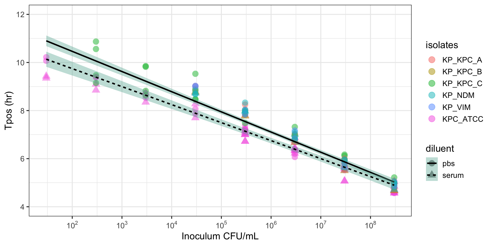
The Acute Website
Adapting Bloodculture Systems to Monitor Antimicrobial Efficacy

Principle Investigator: Irene Zaghi, M.D.
Supervisors:
- Russell E. Lewis, Pharm.D., University of Padua
- Monica Cricca, M.D., Ph.D., University of Bologna
- Vittorio Sambri, M.D., Ph.D., Univeristy of Bologna
January 20, 2023
Antibiotic dosing is an uncertain science

Image: Irene Zaghi, M.D.
Antibiotic dosing is an uncertain science
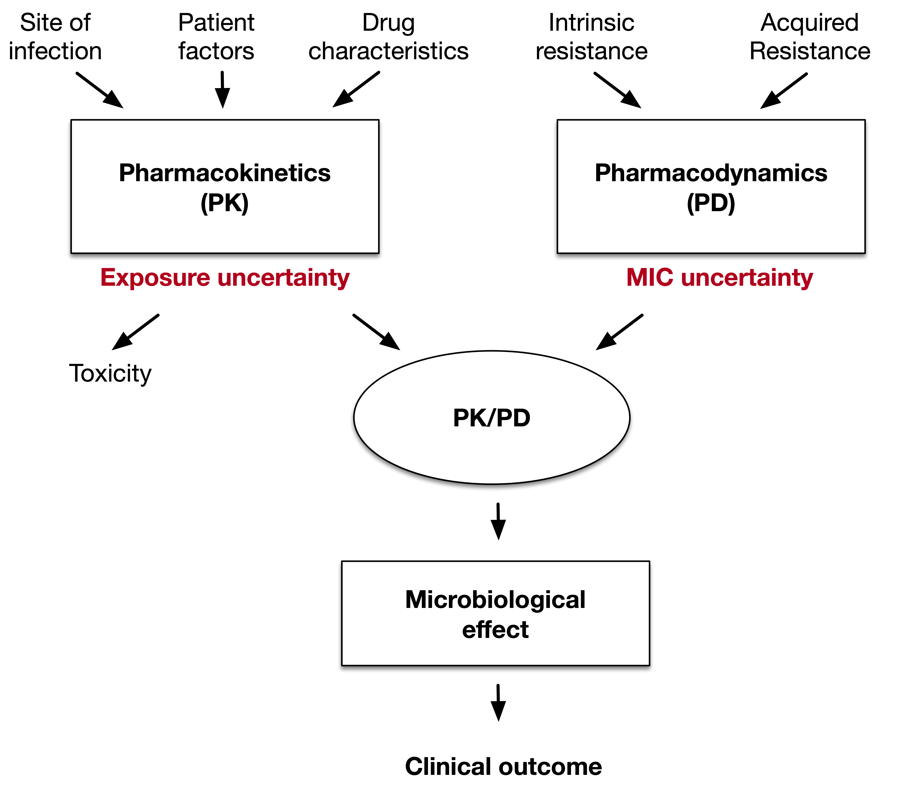
Antibiotic dosing is an uncertain science
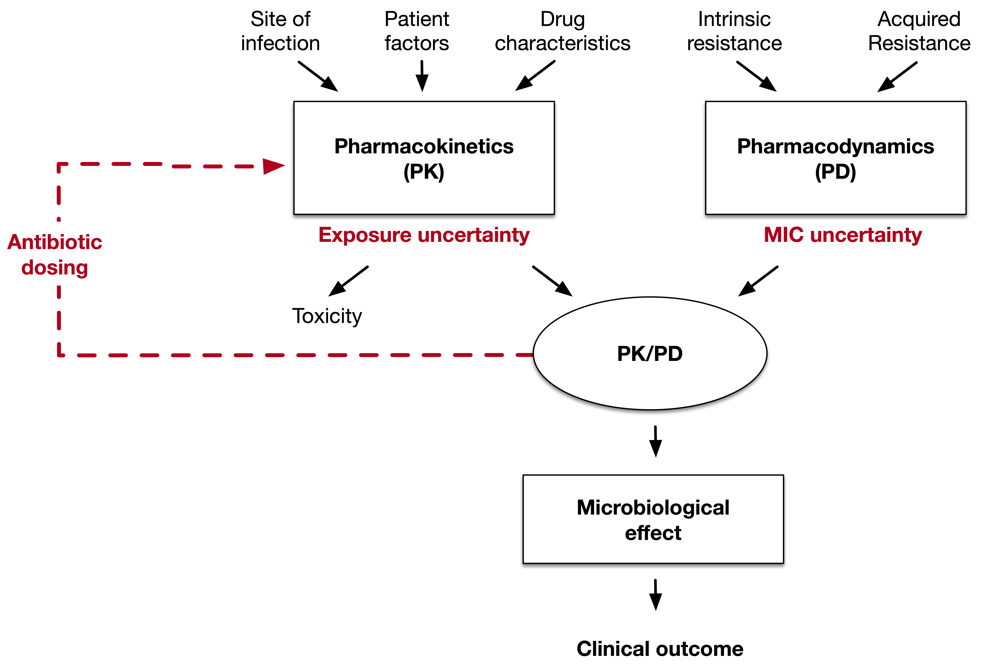
How can dosing uncertainty be managed?
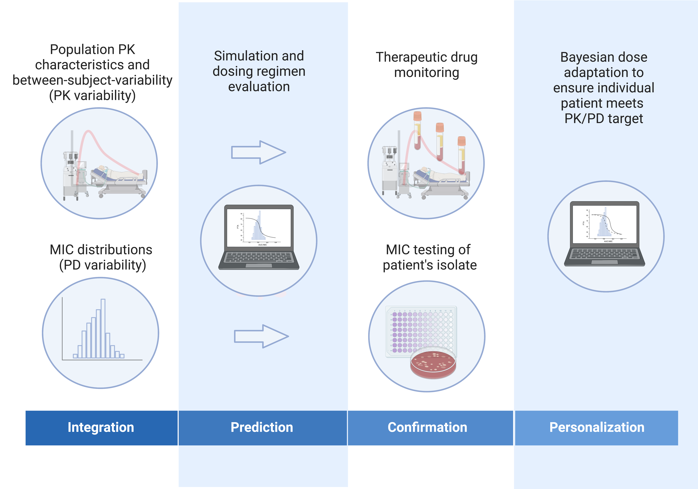
Dosing uncertainty at the dawn of penicillin resistance
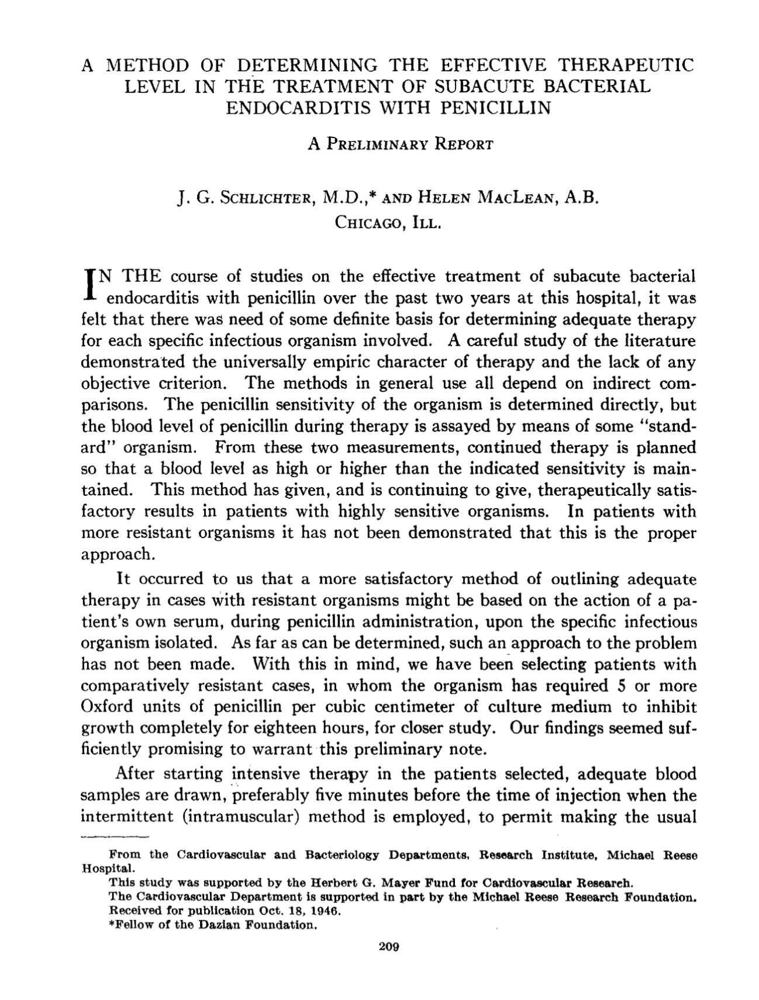
Dosing uncertainty at the dawn of penicillin resistance
“It was felt that there was a need of some definite basis for determining adequate therapy for each specific infectious organism involved…”
“Current methods in general use all depend on indirect comparisons (MICs, measurement of penicillin blood levels). In patients with more resistant organisms, it has not been demonstrated that this is the proper approach…”
“…It occurred to us that a more satisfactory method of outlining adequate therapy in resistant organisms might be based on the action of the patient’s own serum during penicillin administration.”
Serum bactericidal test (SBT)

SBTs correlate with antibiotic PK/PD

Potential clinical utility of SBTs
Individual patient-level diagnostic meta-analysis (1947-2020)
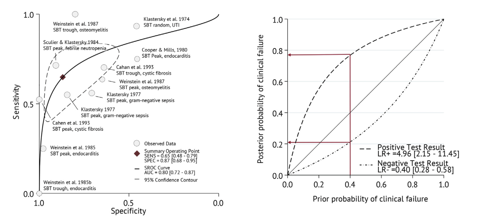
Prognostic performance similar or better than current susceptibility breakpoints
SBT advantages
- Only microbiological test that accounts for both antibiotic PK and PD
- Accounts for protein binding changes
- Can detect synergistic or antagonistic antibiotic interactions
Why were SBTs abandoned?
- Insufficient standardization despite published methods
- CLSI M21-A, last updated 1999
- Poor inter-laboratory reproducibility
- Labour-intensive to perform
- Lack of perceived need after introduction of reliably bactericidal antibiotics in 1990s
- 3rd generation cephalosporins, fluoroquinolones, carbapenems
- Delay in results reporting (48-72 hours with patients isolate)
“I read your SBT review and have a suggestion…”
Use continuously-monitored bloodculture systems Time-to-positivity (Tpos) to measure bactericidal activity
Concept: The assay will measure time taken for a standardized bacterial inoculum to “grow through” the antimicrobial activity in the patient’s serum under defined conditions.
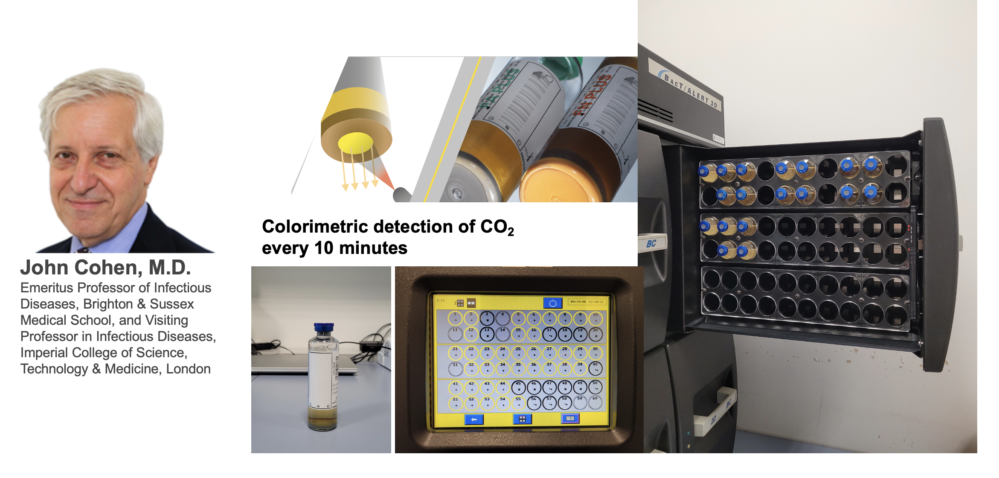
- A short Tpos would indicate inadequate antimicrobial activity and should predict a worse outcome
- A long Tpos is evidence of adequate antimicrobial activity and should predict a good outcome
Blood culture Tpos measures bacterial inoculum and antimicrobial pharmacokinetics
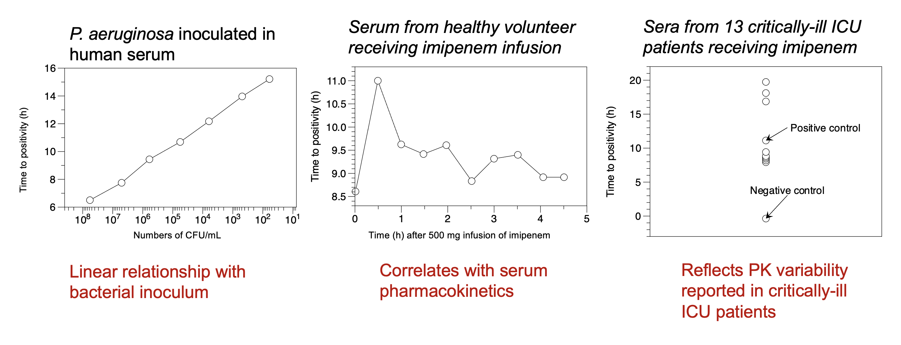
Adapting Bloodculture Systems to Monitor Antimicrobial Efficacy

- Specific Aim# 1: Establish the quantitative relationship in vitro between Tpos and carbapenamase-producing Enterobacterales (CPE) and define antibiotic concentration-effect relationships
- Specific Aim#2: Pilot observational clinical study in 20 septic patients undergoing treatment for CPE to explore how early Tpos results with “indicator” isolates correlate with individual antibiotic PK/PD targets
Tpos correlates with inoculum
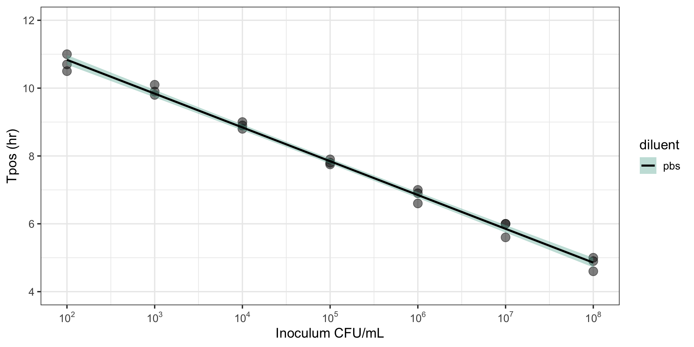
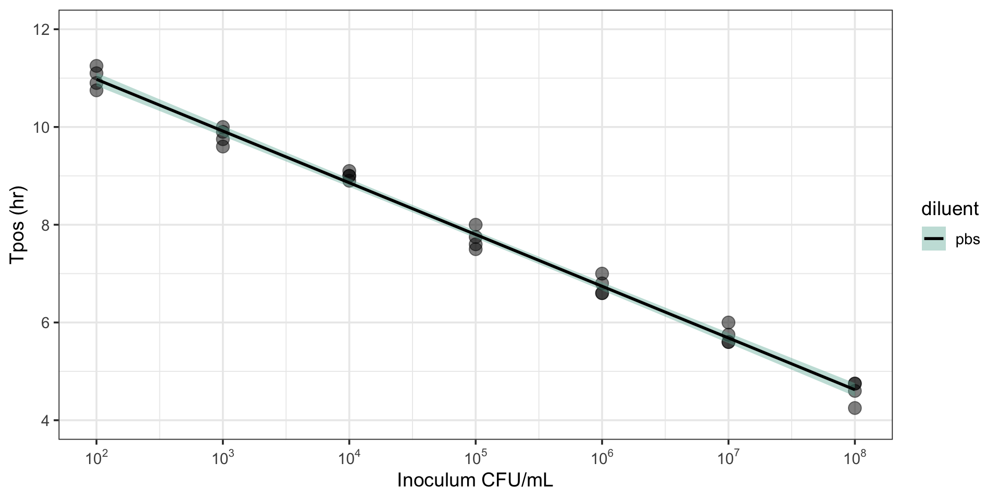
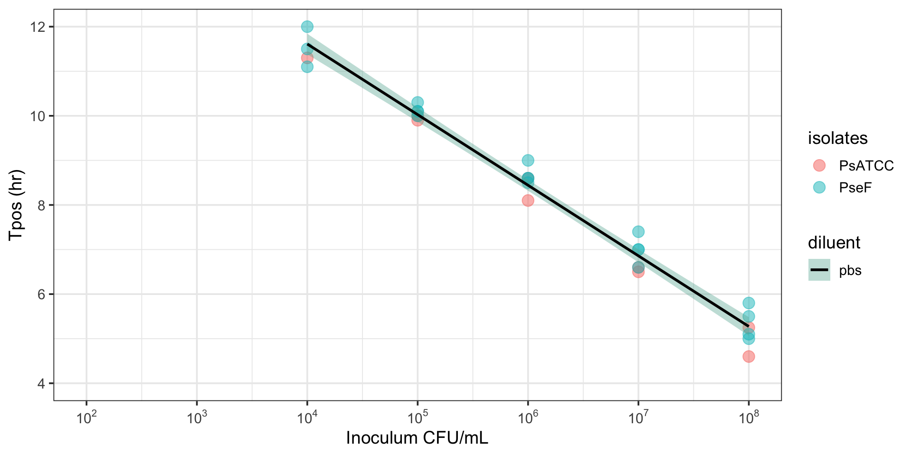
R2 = 0.96-0.99
Tpos can discriminate between susceptible and resistant pathogens
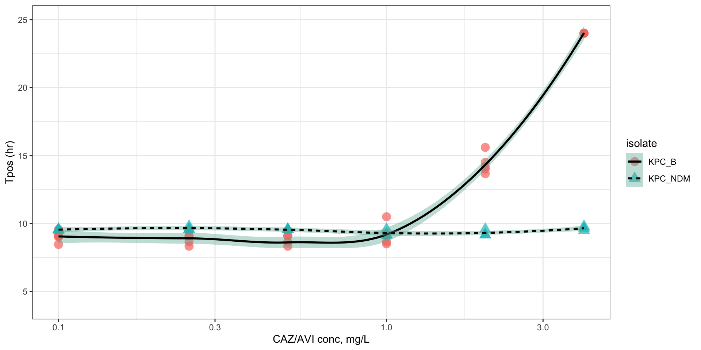
KPC_B MIC 1.0 mg/L, KPC_NDM MIC > 256 mg/L; data fit by Loess
Pharmacodynamic relationship of Tpos against
K. pneumoniae ATCC 700603 (0.75 mg/L)
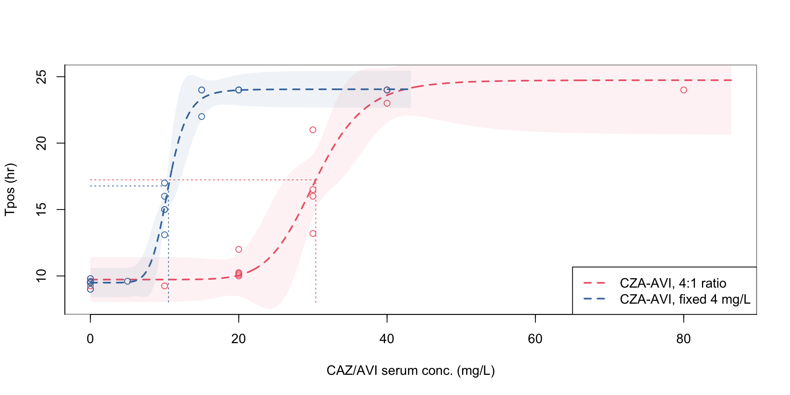
| Estimate | Lower .95 | Upper .95 | |
|---|---|---|---|
| 0.1 | 23.87874 | 19.31716 | 28.44033 |
| 0.25 | 26.93812 | 24.06902 | 29.80723 |
| 0.5 | 30.38948 | 29.11007 | 31.66888 |
| 0.75 | 34.28302 | 31.38838 | 37.17767 |
| 0.9 | 38.67541 | 33.84814 | 43.50268 |
| 0.95 | 41.98020 | 33.98412 | 49.97627 |
| Estimate | Lower .95 | Upper .95 | |
|---|---|---|---|
| 0.1 | 8.099087 | 7.038485 | 9.159689 |
| 0.25 | 9.235833 | 8.728989 | 9.742676 |
| 0.5 | 10.532127 | 10.149119 | 10.915134 |
| 0.75 | 12.010361 | 10.856802 | 13.163921 |
| 0.9 | 13.696074 | 11.685276 | 15.706872 |
| 0.95 | 14.975851 | 12.415855 | 17.535846 |
Inoculum effects observed with PD relationship measured by Tpos
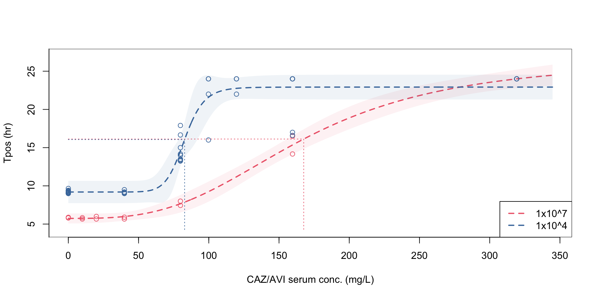
At a standardized inoculum, Tpos demonstrates a consistent relationship across different antibiotics and isolates with different MICs
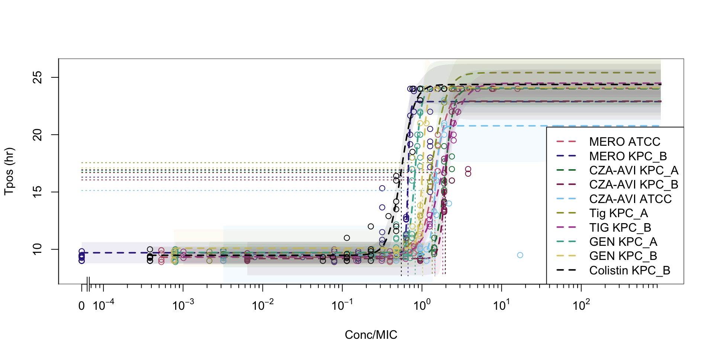
Tpos for monitoring antimicrobial therapy
Comparison of K. pneumoniae indicator isolates
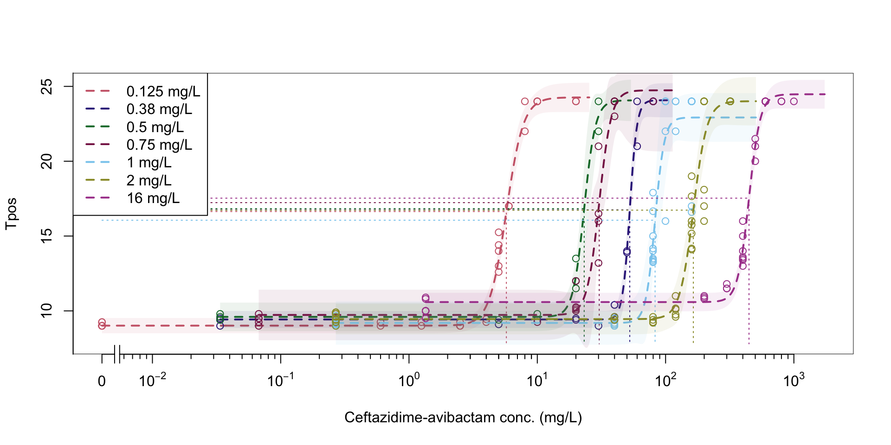
Tpos performed using indicator isolates

Combination therapy

Ceftazidime-avibactam + gentamicin
How could Tpos be used clinically
Could Tpos be performed with “indicator” isolates?

References
References
Kaltsas, P, S Want, and J Cohen. 2005. “Development of a Time-to-Positivity Assay as a Tool in the Antibiotic Management of Septic Patients.” Clinical Microbiology and Infection: The Official Publication of the European Society of Clinical Microbiology and Infectious Diseases 11 (2): 109–14. https://doi.org/10.1111/j.1469-0691.2004.01054.x.